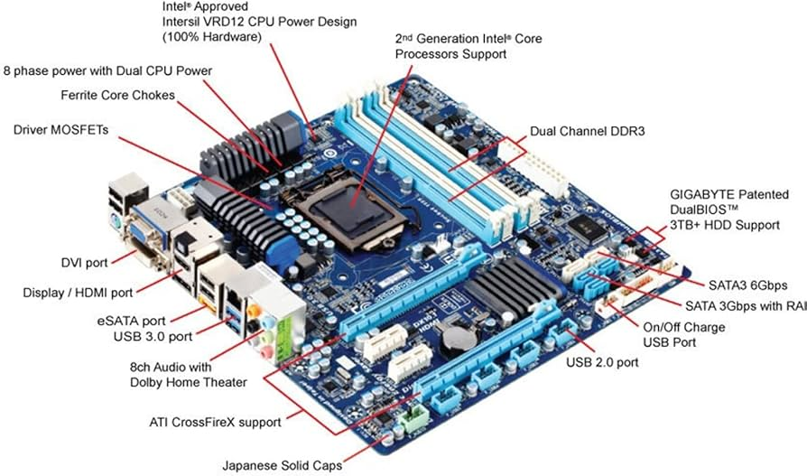

Introduzione
L'architettura della scheda madre definisce come i vari componenti di un computer interagiscono tra loro. Le schede madri moderne offrono una varietà di funzioni e connessioni per ottimizzare le prestazioni.
- CPU Socket: Il punto di connessione per il processore, progettato per specifici modelli di CPU.
- Chipset: Gestisce il flusso di dati tra la CPU, la memoria e i dispositivi di archiviazione.
- Slot RAM: Permettono di installare la memoria volatile (RAM) per l'elaborazione veloce dei dati.
- Porte di Espansione: Come PCIe, utilizzate per schede grafiche, schede di rete e altre periferiche.
- Connettori di Alimentazione: Forniscono energia a tutti i componenti della scheda madre.

Conclusioni
La scheda madre è il cuore pulsante di ogni computer, fornendo la base per l'integrazione di tutti i componenti hardware. L'evoluzione delle schede madri continua a offrire nuove funzionalità per soddisfare le esigenze moderne.